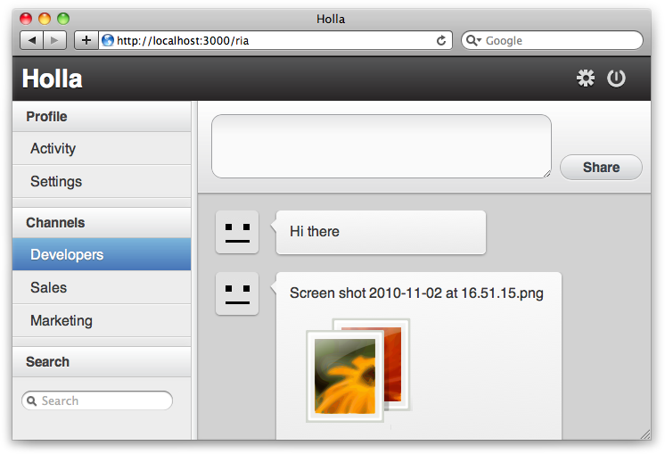

{% include JB/setup %}
{% raw %}
<div>
<div class="book" title="Holla"><div class="book"><div class="book"><div class="book"><h1 class="title1"><a id="I_sect1_d1e382" class="calibre1"></a>Holla</h1></div></div></div><p class="calibre3">Built as a companion to this book, <a class="ulink" href="http://github.com/maccman/holla">Holla</a><a id="I_indexterm_d1e389" class="calibre1"></a> is a JS group chat application. Holla is a good example
    application because it encompasses various best practices covered in this
    book. Among other things, Holla will show you how to:</p><div class="book"><ul class="itemizedlist"><li class="listitem"><p class="calibre3">Use CSS3 and HTML5 to create beautiful interfaces</p></li><li class="listitem"><p class="calibre3">Drag and drop to upload files</p></li><li class="listitem"><p class="calibre3">Lay out your code using Sprockets and Less</p></li><li class="listitem"><p class="calibre3">Use WebSockets to push data to clients</p></li><li class="listitem"><p class="calibre3">Create a stateful JavaScript application</p></li></ul></div><p class="calibre3">Clone the code from <a class="ulink" href="http://github.com/maccman/holla">Holla’s GitHub repository</a>
    and take a look. Many of the examples in this book have been taken from
    Holla’s source; see <a class="ulink" href="pr01s06.html#P_1" title="Figure 1. Holla, an example chat application">Figure 1</a>.</p><div class="book"><div class="figure"><a id="P_1" class="calibre1"></a><div class="book"><div class="book"><a id="I_mediaobject_d1e419" class="calibre1"></a></div></div><p class="title4">Figure 1. Holla, an example chat application</p></div></div></div></div>

{% endraw %}

